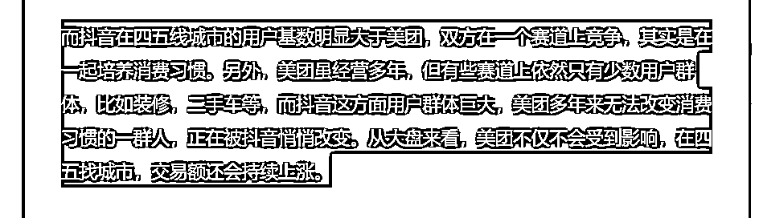
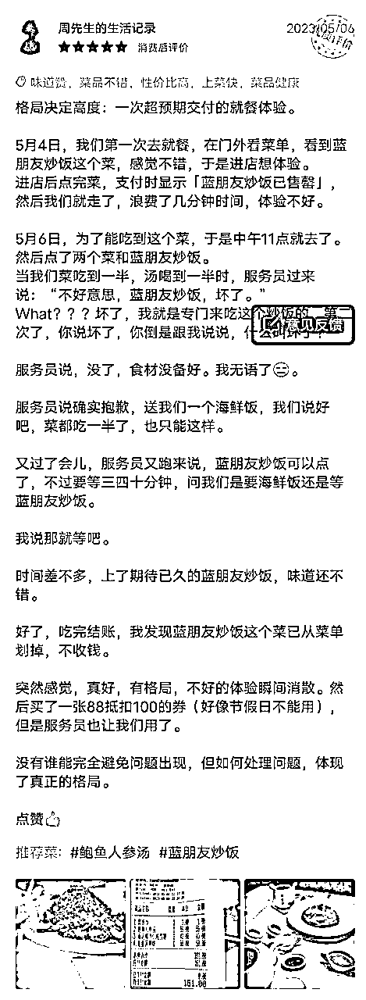
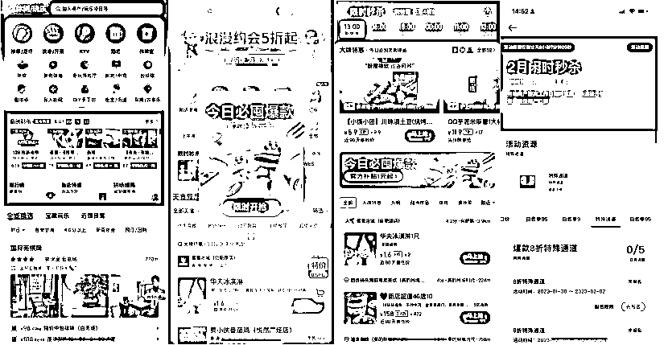
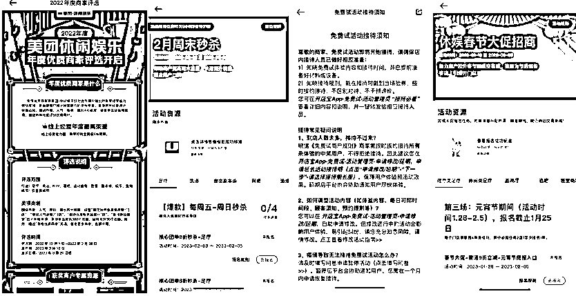
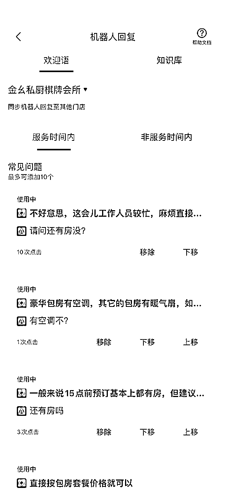
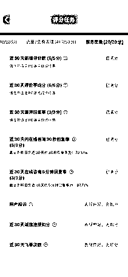
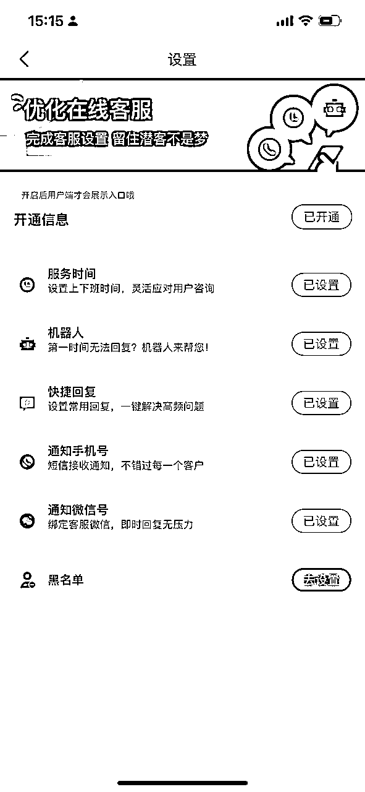
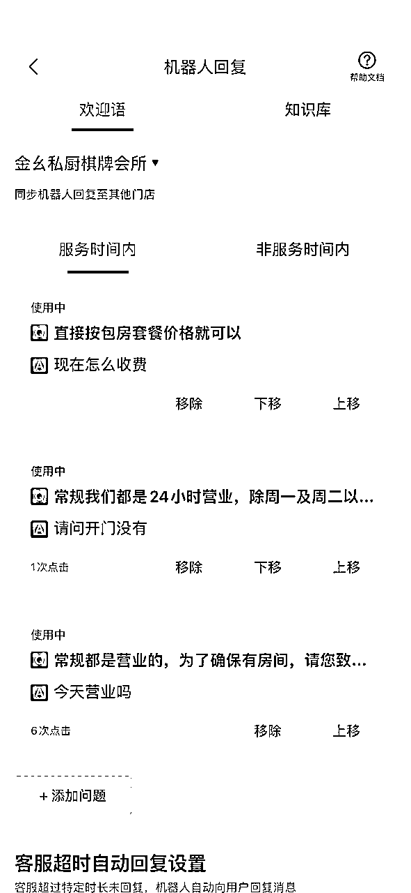

来源：https://q6rpgbg9y1.feishu.cn/docx/EdTrd7M82oEZ1QxUOh2cKYJgnIi
大家好，我是周先生
前几天分享了棋牌室的案例复盘https://t.zsxq.com/0erTP2s2w，很多伙伴看到后问我，美团到底要怎么样操作才能把评分和排名拉上去，5.0评分是怎么做到的，能不能分享下具体操作细节。
今天就给大家分享一篇我总结的美团提升排名和评分的技巧。
虽然现在抖音本地生活如日中天，各大平台也在下场争夺这块蛋糕，很多人会觉得美团不如当年了，以后肯定会被抖音瓜分掉巨大的份额。但毋庸置疑的是，到了现在美团仍旧是本地生活的王者，短时间内它的江湖地位无人能撼动。
早在21年，我就这篇文章中预测过https://t.zsxq.com/0egxbGf2F，抖音下场做团购，美团的体量只会增加不会减少。

20年我刚在美团的时候，我们城市一年的GMV也就5000多万，而今天，美团的GMV已经到了8000万。事实证明，抖音的出现，让美团不降反增。因为还有太多的人没有养成使用团购的消费习惯，抖音这一波助推，让团购的用户爆发式增长，可以说美团的增长也是抖音的功劳。
存量市场，才是你多我少，你升我降，而增量市场，是竞争越激烈，总体就越增长。
大家都知道，抖音是基于算法推进的平台，而美团平台的底层逻辑是搜索逻辑，搜索逻辑带来的核心指标就是根据店铺的各项综合指标排名。
当年美团通过“千团大战”及大量美团BD，积累了大量商家，也最终让大家养成了在美团端下单的使用习惯。而在没有短视频之前，这个习惯就已经根深蒂固，所以消费者现在使用美团还是改不了精准搜索这个动作。
简单来说，我知道我要什么，我直接用美团，我不知道我要什么，打开抖音看看。
知道了美团的逻辑是搜索，那么哪些因素能让用户更容易搜到你，能让用户搜索关键词的时候你首先出现。

一开始，我心里想的是，吃完要给他个差评；后来他解释道歉并赠送菜品后（这是解决方案）（很多店只会说抱歉不会拿解决方案），我心想，算了，谁都会出问题，人家也正面处理了，就这样吧，下次也不会来了。再后来，结完账我心想，虽然出现问题了，但是人家解决了，态度又好，解决方案也让我满意，给个好评吧。
你看，当我们遇到问题的时候，这个店就用他的办法让我从差评用户硬生生变成好评用户，一切都是自发的过程。
我们不可能完全避免问题出现，如何解决问题才是关键。 建议每个老板，一定要有一套“应急预案” ，针对可能发生的问题提前拿出解决方案，当问题出现时，你又不在店里，员工才知道如何处理，尽量做到让用户满意。你要明白，很多时候，用户其实不怕出现问题，怕的就是出现问题了你还不管！用户要的是好的体验！
其实就像谈恋爱，日常相处经常会出现矛盾，但是她们（顾客也一样）一般不会说，有不爽就在心里憋着，回头就给你一个老娘生气了（差评），你还一脸懵逼。
只要好评做好了，你在美团上的评价版块就会丰富，这会大大的打消潜在客户的疑虑。这个工作再次强调一遍，非常重要，前期必须要老板亲自抓，除非你的实体店已经形成体系，店长就能做得到标准化，否则不要轻易下放！
要做好排名和评分，上面的标准是必须做到的基础。做到这些标准，你的评分就不会差到哪里去。
不过，我知道，基础的东西你们不感兴趣，你们都想要一些“葵花宝典”，用来打败同行。那么我就结合这些年的经验总结，给你们总结以下小技巧，你拿回去就能用：






1）店内刚开业，产品和服务是否稳定了，没有稳定之前，最好都叫试营业，确保产品和稳定之后，再上推广通；
2）推广通的成本会比较高，是按点击付费的，咱都知道，投流的唯一标准是：ROI为正，就持续投。只有前期产品和服务稳定，投流才能起到加持作用。另外，推广通最好要结合“每个公域流量的客人都能导入到私域”搭配使用，确保付费换来的客户一定要沉淀到私域，降低后续的流量推广成本。
常规的产品设计标准，一般是引流品+基础品+利润品三大类别。
引流品：只要不亏本就行，价格降到最低，当然这不是打价格战，根据美团的排名规则，价格也是一个筛选标准。这部分喜欢低价的用户，不是特别在意消费体验，那么我们的隐形成本就可以相应的降低。（表面上要一样，不要让他们感觉低价买了个差的产品，人性就是不想花钱还想要好的）
基础品：根据当地市场情况，这个产品一般有两种设计思路，一是比市场略低一些，产品跟市场一样。很多用户会对比，当他看到价格差不多后，会点进去看你的产品如何，如果产品一样，多半他会选择低一些的，哪怕是几块钱。第二是比市场略高一些，但产品要比市场好多一些。同样的，用户点进去看后，发现才贵几块钱，但是产品更好些，会更倾向于选择贵的。
利润品：既然是利润品，那就意味着价格不会低，但是价格高，要有高的理由。如果成本也跟着上去，那么其实你也并没有增加利润。不增加成本又能提升价格的办法是：增加边际成本更低的东西。也就是，在产品本身上，不用增加太多，而去增加产品之外的东西。
以下用棋牌室举例：
比如我们棋牌的引流款是：我们选择了88元/6个小时的特价房，相对周边来说，已经是最低的价格，但是后面发现还有更狠的，我们就直接把这个价格做到了58元/6个小时的秒杀价（每天限量2间），以确保美团每天都会产生销量，获得更大曝光，以提升在美团端的排名及权重。
基础款是：我们在包房里安装了风扇及暖风机，贵阳夏天本身比较凉爽，风扇其实基本就能满足夏天的需求，在这种情况下，我们定价130元/6个小时的高级房，就是我们的基础款。相对周边的竞品对比来说，具有明显的价格优势，用户从私域来选择基础款的也比较多，对于部分几乎天天光顾的老顾客，我们会给100元/6个小时的特殊价，以锁定老顾客；
利润款是：我们在豪华包房里，安装了空调、搭配了更贵的沙发、麻将机用的是雀友的、在晚上六点半还搭配了四人的简餐（馄饨或饺子），这些东西都是一次性投入，后期是不会增加成本的，这样价格也就做到了200元/6个小时，但是相对而言，利润对我们来说已经相对可观了。
其他产品设计思路：另外就是超时部分的费用，我们选择了每超过1个小时就按30元计算，这在周边来说算是普遍价格，这部分我们也没有改变，因为超时部分往往就是我们最大的利润的部分。
因为有大量的用户从抖音加到微信，一般情况，都是直接转化成交了。但是我们针对不同情况还会做一个特殊动作——让他们去美团下单。让微信的这波流量又反哺美团，相当于“一人用了三次”。我们在美团设计一个指定产品，让他们去买这个产品就可以获得优惠，从而增加了美团的搜索和访问量。
其次，设计一个小的礼品，让用户收藏赠送就好，这是常规操作。
重点是：这些操作，在微信就要提前完成，不要等用户到店再做，用户在来的路上，是很闲的。
再就是，线下自然来的用户，也可让他们去美团下单，增加流量。
为什么不让去抖音呢？之前其实说了，抖音主要还是靠视频推送，搜索流量还不高，所以增加主动访问的意义不大。
说这个点前，大家首先要记住：绝大部分用户，不喜欢写评价，尽管消费体验好，也懒得写。你的目标，就是激活他们。
来看看有很多商家是不是这样的，当用户消费完，跟用户讲：“你好先生，请问今天的消费还满意吗？能不能麻烦您给我个好评，我这边送你XXX东西。”这样确实能要到一些好评，但是大部分时候，用户是不愿意评价的。一是人家都吃完了，马上要走了，哪里有时间给你好评，你送那点东西算个啥；二是说不定你产品和服务人家就是不满意，你还好意思要好评？我不给你差评就不错了；三是很多人根本不在乎，懒得给你评价。就像你在淘宝买东西，快递里都会有卡片，让你好评返现，但没有几个人会去好评的。
那么怎么才能要到好评，给你几个办法：
1）提前要。一般流程是，用户下单，你核销，用户消费，用户评价。提前要，就是在你核销完用户还没消费时就要。比如你让微信用户去美团下单，下单完就让他微信给你发核销码，你核销后就让他好评，告诉他可以获得XXX优惠。并且是立即获得的。记住这个流程一定要尽最大可能降低用户行动阻力，你要提前写好文案，配上图发给他，用户都是很懒的。
2）抽奖，在前台摆一个抽奖箱子，摆一些礼品。当用户下单完，就告诉用户，五星好评可以抽奖一次，用户还没消费，刚付完钱就能获得一次抽奖机会，条件仅仅是给个好评（这时候，你可以让用户先去抽奖，你用他手机来好评），等他抽完奖回来你就给他兑奖，反正好评已经写好了。
我们店里面是这么操作的：对于到店的客户，我们开始是准备的加多宝或者红牛等饮料，到店美团一验券了之后就送饮料，后期调整为赠送水来实现，基本上美团的客户也都能理解，我们的话术是：“美团的价格我们相对来说就比较划算，希望能得到您的好评，也就是为了做一点数据，麻烦您的配合和支持，感谢”。
根据美团的评分规则，星级分数=（5星*数量+4星*数量+3星*数量+2星*数量+1星*数量）/总评价数，所以如果你不会要好评，你也一定要尽可能的避免差评产生。而避免产品产生的办法，首先当然是尽量避免问题出现，但我前面要说了，完全不出现几乎不可能，所以你需要一个差评处理的预案。
记住：用户要的是良好的体验。
首先你要想想，你的店里有可能会出现什么问题，还是拿棋牌室举例：
1）服务问题：A、端茶、上小吃、上扑克牌、纸巾的速度是否及时快速；B、及时补充热水的时间是否迅速；C、环境是否清爽卫生，是否有异味；D、工作人员的服务态度、状态的问题；E、小吃的分量问题，茶饮的口味问题；
2）产品问题：A、超时之后的计算问题，如30分钟内，我们直接免掉超时费，超时30分钟以上，我们会按30元/小时计算；B、包房+套餐的费用，需在开始前就和客户明确清楚；C、超时的时候要及时提醒客户，避免客户对后续价格产生异议；
3) 价格问题：必须一开始就明确清楚包房费用、套餐费用及加时费用，避免引起客户后续付款时候的不满。千万不要事后收一些“你以为正常但用户不知道”的费用，用户心理想的是：“MMP，来的时候不说，现在要收费，当我傻？”
4）好评问题：由于是体验式经济，所有的客户一到店就几乎知道今天是否会满意了，不会像餐饮那样，必须要吃了之后再做评价。但是经过实践，我们之前产生过差评，差评就是客户在消费后做的，我们分析了原因，对于棋牌麻将就是有输有赢，赢的固然开心，但是输的肯定就会带着情绪，很有可能就会把情绪发泄在这个环境，于是凡是美团来的客户，我们通通都要求到店即帮忙做好评，基本上到店的客户，对我们家的环境都还是很满意的。
5）尽管已经做到万无一失，但是难免还是会有一失的时候，如果用户已经差评，我们的处理办法是：凡是美团到店的客户，我们都提前预留了客人的电话号码，然后添加客人到微信，当天客人主动引导提前做好评，如果客人没有及时的做好评，那就在登记本里面备注清楚，确保客人如果做了差评，就及时的跟进。询问差评的原因，诚挚的道歉并拿出比如赠送时长等解决方案。
另外我们会在结账的时候，适当给加时过长的客人免时，比如说，客人玩了3个小时，客人反馈能否优惠的时候，我们可以只按2个小时收费，以提高客户满意度。
《天幕红尘》里有句话是这样说的：“不要把用户当傻子，要让用户觉得你是个傻子”
小结一下：美团的流量精准且见效快，有很多门店，单是做好美团平台，就很轻松地实现了盈亏平衡。甚至因为美团的存在，很多人选址不一定选租金贵、人流量大的位置，产生了一些专门依靠美团存在的外卖店，这样的外卖店和美团是互利共生的，会更懂美团的流量推送机制，甚至为了美团，怕影响销量，都不敢做自己的私域沉淀。其中要特别注意，关于美团技巧的使用，更多的是要了解平台的规则，合理的使用平台的规则及工具，提升美团的经营评分，流量完善，生意越做越好，后期结合自己的使用，汇总更多有效的技巧。
一旦像我们辅导的案例——金幺私厨一样，区域排名靠前，你就相当于每天都有免费的精准流量。再有5.0分加持，相当于纯自动转化。秒杀太多苦逼且无效的营销手段。
这几个违规类型一定不要去触碰，否则平台它会给你的店铺扣分、降权、下线，直接影响店铺的流量。
第一，虚假交易。
简单讲就是刷单，这里面牵扯到的就是不要用员工账号去操作刷单，或者去发布无实物交易的产品链接和线上线下交易商品不一致等不正当的方式来获取了订单量、评价交易额，亦或者是恶意套取了平台的补贴，这里面的操作要符合平台规则，不要随便去刷单。
第二，滥用反馈或者评价。
它是指你操控的用户账号发布不真实的评价反馈的行为。比如说你通过虚假交易的方式增加了单量的同时进行虚假的评价，那部分评价中它还包含了本品无关的店铺活动、商品信息、联系方式等等，或者恶意的去竞争的商家进行了差评。
第三，交易转移用户。
简单讲就是不要直接了当的导私域或者其他平台，这一点非常重要，在美团的私信功能，不要留存微信账号，不要引导电话及加微信等操作，这个非常容易引起客户流量下降，哪怕你有引导客户到其他平台的倾向也不行，切记不要在商品图片或公告上面展示了你的微信账号，这个一定是红线问题。
第四，滥用平台服务保障。
这一条我们一般都不会犯，你的产品和服务一定要和承诺对等，这里面牵扯到不要在细项条款中备注不开发票等细节，这明显不符合国家法规的，就不要去写出来，该开发票就一定要开。另外，不要和平台对抗，否则吃亏的一定是我们小商家。
第五，违规再上线。
如果店铺已经出现违规并且被下线了，换了资质又重新上线的，亦或者是借用了他人的营业资质，或者用门头环境图造假的方式重新上线的店铺，这个就非常严重啊，一旦被平台发现之后，不光是你这个店，如果你还有其他的店铺，也会一定能受到影响，平台他会一起去做自修、限制到店活动，甚至是店铺下线等处理。
第六，价格异常，比如说短时间内去调高产品的价格哄抬物价，价格远高于市场价格，这种也是平台红线。
第七，虚假活动。
虚假活动是指以虚假的优惠活动来获取单量和排名。比如说你设置了虚假高额的满减、满赠、买赠的活动，再不合理的去调高价格，再配合去减配送费以及新客立减的方式等行为。
总之，还是那句话，尊重平台规则，不要对抗平台，我们要做长远稳定的做生意，一定要先了解平台的规则，切记绝对不能触碰平台的红线。
其实归根结底你会发现一个亘古不变的真相：无论是抖音团购还是美团团购，都是团购。
什么是团购？就是量多，所以低价。
正因如此，商家做团购本身是很难盈利的。再加上抖音疯狂的低价爆品策略，很多商家被达人和很多羊毛党来薅了一顿，看着每天门庭若市，一算账毛钱不挣净赚些吆喝，最后剩下一地鸡毛。
不管在美团还是抖音，除了前面说的店铺的运营技巧，提高排名和评分的办法外，如何搭配一个既能盈利又能卖的好的产品就尤为重要，是每个商家和实体运营商需要好好上的一堂课，也是最重要的一堂课。
不管在什么年代，通过搜索被动来的流量都是极为精准且高性价比的。此外，各位老板要记住——所有营销的更底层是商家的产品和服务要超过基本线，要不然再牛逼的运营也回天乏术。小马宋老师在他的《营销笔记》中说过：“营销的前提是经营”。
你的品好，营销是加速你扩张。你的品不好，营销是加速你灭亡。
祝：阅有所获。